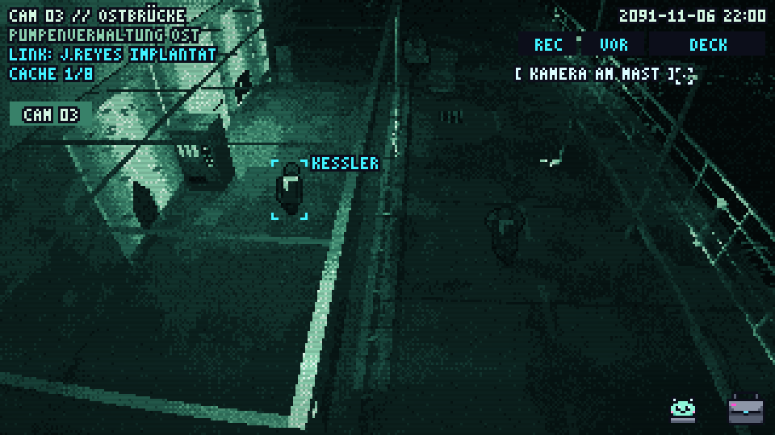
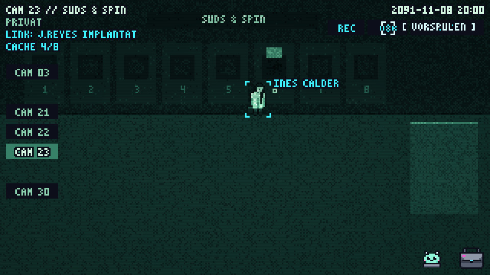
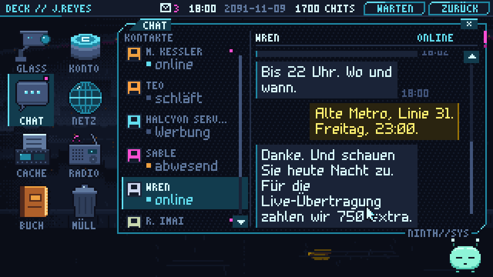

Prolog: Nachtschicht
Ein Weg durch. Der Abend beginnt um 21:30.
Start:
index.html öffnen. Esc überspringt das Intro, dann „Neues Spiel“.- Deck anklicken, CHAT, M. KESSLER.Frau Kessler glaubt ihrem Mann die Überstunden nicht und will Beweise. Das Foto zeigt ihn mit hellem Schal.
- GLASS, CAM 03, VOR bis 22:00.Schichtende: Leute kommen aus dem Bürohaus.
- Den Mann mit dem hellen Schal anklicken.Juno markiert Kessler und hört ihn telefonieren: „Halb elf, bei Yuen's.“ Für die Kamera dort hat sie keinen Zugang.
- Die Kamera am Mast rechts oben im Bild anklicken.Auf dem Gehäuse steht der Wartungscode von CAM 04.

Kessler ist markiert, der Zeiger steht auf der Kamera am Mast. - DECK, auf der Karte CAM 04 anklicken, dann noch einmal, um sie zu öffnen.Der erste Klick verbindet die Kamera. EVI freut sich.
- REC drücken, VOR bis 22:30.Kessler gibt einem Mann im grauen Mantel seinen Ehering: „Bis Freitag, Kessler.“ Das ist Gus Varga, ein Kredithai. Juno hat alles aufgenommen.

REC läuft, oben rot. - DECK, CHAT, M. KESSLER, „Den ganzen Clip schicken.“ wählen.200 Chits kommen. EVI fragt, ob Frau Kessler jetzt froh ist. Sable meldet sich und will Informationen kaufen; das ist freiwillig.
- ZURÜCK, den Kühlschrank anklicken.Er ist leer. Juno muss raus.
- Tür, Treppe. Motte fragt, was Juno den ganzen Tag macht: „Ich schau Leuten zu. Und verkauf, was ich sehe.“ wählen.Dann ist sie unten im Hausflur.
- Die Briefkästen anklicken.Eine Mahnung: 900 Chits Miete, fällig in drei Tagen.
- Haustür, Bao anklicken, „Wie immer.“ wählen.Juno isst. Dann stottert der kaputte Werbeschirm, ein Auge im Rauschen sieht sie an, und dort steht JUNO. Es folgt die Endkarte des Prologs.

Die Kowalski-Straße, Baos Stand mit dem Schirm.
Kapitel 1: Glass
Ein Weg durch die Hauptgeschichte. Viele Orte sind noch einfarbige Blöcke.
Start:
index.html?act=kapitel1 öffnen. Der Prolog geht noch nicht von selbst in Kapitel 1 über.Mittwoch 18:00, der erste Abend
- Deck anklicken, dann CHAT und WREN.WREN zahlt dafür, dass Juno herausfindet, wen Dr. Ines Calder trifft und wo. Spur: die Lull-Klinik.
- GLASS öffnen, CAM 21 anklicken, VOR bis 19:00.Ines kommt aus der Klinik.
- Ines anklicken.Juno markiert sie.

Ines markiert. Unten rechts: die Speisekarte im Fenster. - Die Speisekarte im Fenster unten rechts anklicken.Darauf steht das Gäste-WLAN: CAM 22 läuft.
- DECK, dann auf der Karte CAM 23 anklicken.Der Waschsalon hat den Werkscode 0000: CAM 23 läuft.
- WARTEN, bis die Uhr 01:00 zeigt. Dann ZURÜCK und das Bett anklicken.Ab 01:00 geht das Bett. Es wird Donnerstag.
Donnerstag 18:00, der zweite Abend
- Deck, GLASS, CAM 23, VOR bis 20:00.Ines bringt keine Wäsche mit. Sie legt etwas in den kaputten Trockner 6 und geht, aber nicht nach Hause: Richtung Sumpf-Abgang.

Der Trockner mit dem Zettel ist die Sechs. - DECK, CAM 30, einmal VOR bis 20:15.Ines liest die Pegeltafel und sieht auf die Uhr. Juno fragt sich, was sie hier will: Freitag, 23:00 ist Niedrigwasser, unten ist nur die alte Metro. Also trifft sie dort jemanden. Auf der Karte erscheint CAM 31.

Der Sumpf-Abgang mit der Pegeltafel. - DECK, ZURÜCK, dann zu Fuß: Tür, Treppe, Haustür, Gasse, SUDS & SPIN.Die Uhr steht, solange Juno läuft.
- Trockner 6 anklicken, „Zurücklegen.“ wählen.Darin liegt ein Datenstick. Ein Schlüssel ist drauf, wozu, weiß Juno noch nicht. Sie lässt ihn liegen.

Der Waschsalon, noch als Block. - Nach Hause: Tür, Kowalski-Straße, Haustür, Treppe, Meine Tür.
- Deck anklicken, WARTEN bis mindestens 01:00, ZURÜCK, Bett.Es wird Freitag.
Freitag 18:00, der letzte Abend
- Deck, CHAT, WREN, „Den Ort senden.“ wählen.Juno verkauft ihre Vermutung: 1250 Chits, jetzt 1700. WREN zahlt 750 extra, wenn sie heute Nacht zusieht. EVI freut sich über das Geld.

Der Ort ist verkauft. - GLASS, CAM 31 anklicken und den Takt eingeben: Lang, Kurz, Kurz, Lang.Kein Code findet diese Kamera, nur das alte Protokoll in Junos Kopf. Im Rauschen steht kurz das Auge, dann: „Verbunden.“
- WARTEN, bis die Uhr bei 22:45 stehen bleibt.Um 22:30 bucht das Konto die Miete ab: 900 Chits.
- CAM 31 anklicken und die Zeilen weiterklicken.Ines kommt die Treppe herunter, um 23:00 kommt Lantern im Rollstuhl. Sie gibt ihm die Wallet und flüstert: „SUDS & SPIN. Trockner sechs, der kaputte. Sonst weiß es keiner.“ Juno: „Doch. Ich.“ Lantern fährt weg. Im Schatten steht ein weißer Fleck, das Overlay zeigt BEDROHUNG.
- STEUERN, CHAT: INES, LAUTSPRECHER und REVIER 9 anklicken.Nichts davon hilft, und das ist Absicht. Nach etwa 22 Sekunden geht es von selbst weiter, VOR kürzt ab.

Juno kann nur zusehen. - Nur noch zusehen und Zeilen weiterklicken.Ashe tötet Ines, in der Voreinstellung hinter schwarzen Balken. Er sieht in die Kamera, dann SIGNAL LOST. Danach Junos Wohnung, EVI: „Er hat sie ausgeschaltet.“ Es folgt die Endkarte „Kapitel 2: Aufnahme“.